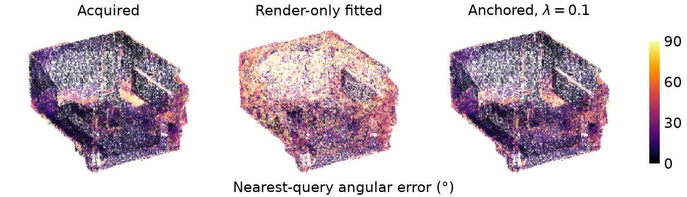
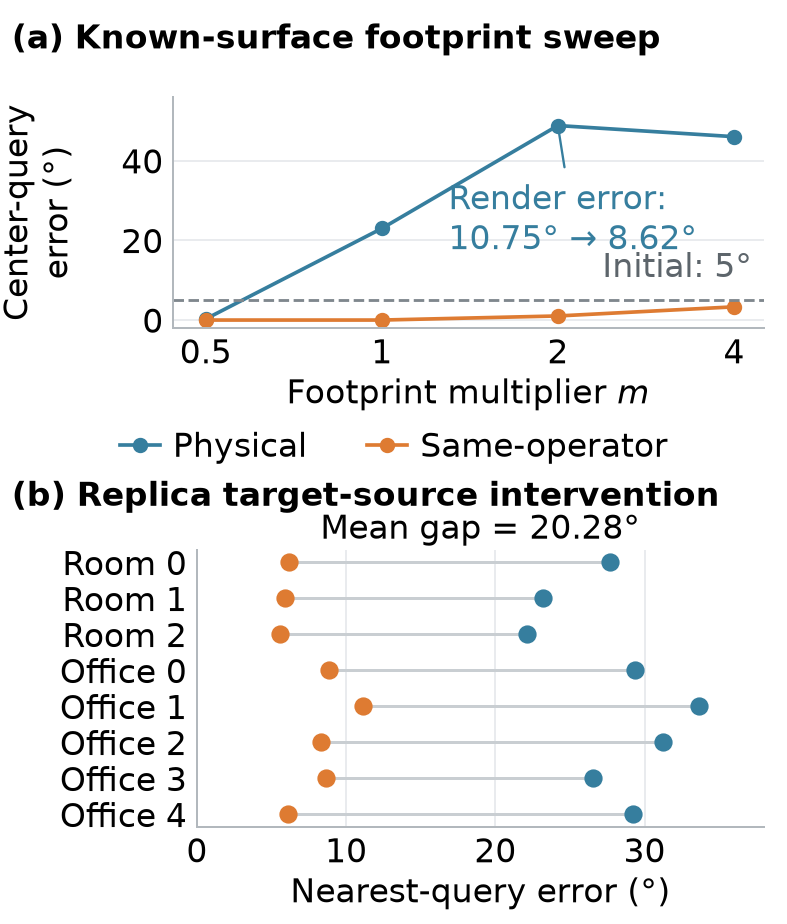
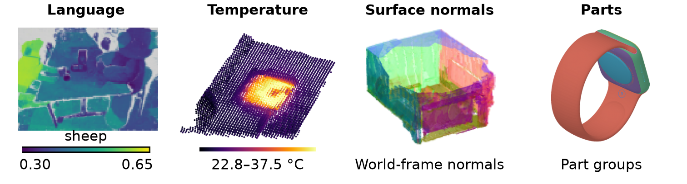

Rethinking 3D Attribute Fitting through Geometric Acquisition
Better rendered predictions can come with worse 3D attribute queries.
When registered images and 3D geometry are available, image attributes can be transferred directly to surfaces. We use DirectLift to establish a reference and ask what further fitting through differentiable rendering changes.

Rendering and 3D queries
For each scene, we start from the same acquired normal field and keep Gaussian geometry and opacity fixed. We measure held-out rendering error and normal-query error at fixed 3D locations.
| Normal field | Held-out rendering | Nearest-Gaussian query |
|---|---|---|
| Direct acquisition | 14.12° | 13.56° |
| Render-only fitting | 10.33° | 36.62° |
| Fitting with acquired-direction anchoring (λ = 0.1) | 10.19° | 17.76° |
Why local errors increase
Gaussian rendering blends attributes from multiple primitives along a ray. A physical surface target gives the attribute at a specific surface location. Optimization can shift individual Gaussian normals to improve the blended prediction.
In a controlled comparison across eight Replica scenes, fitting to physical surface targets produced a 20.28° higher nearest-query error than fitting to targets generated by the same renderer.

Direct acquisition across attributes
DirectLift associates registered observations with 3D points or mesh faces and aggregates them across views. This yields text-queryable features, temperatures in Celsius, world-frame normals, and mesh part groups.

Language. The gains from further fitting varied with the direct construction and scene.
Temperature. Across eight RGBT scenes, fitting reduced rendered temperature MAE from 2.01°C to 1.72°C, while nearest-query MAE at fixed 3D locations rose from 1.89°C to 5.94°C. The query references come from held-out thermal measurements and frozen depth.